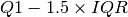
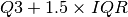

Statistical Analysis and Data Exploration¶
This section is an exploratory analysis of the Boston Housing data which will introduce the data and some changes that I made, summarize the median-value data, then look at the features to make an initial hypothesis about the value of the client’s home.
The Data¶
The data was taken from the sklearn.load_boston function (sklearn cites the UCI Machine Learning Repository as their source for the data). The data gives values for various features of different suburbs of Boston as well as the median-value for homes in each suburb. The features were chosen to reflect various aspects believed to influence the price of houses including the structure of the house (age and spaciousness), the quality of the neighborhood, transportation access to employment centers and highways, and pollution.
There are 14 variables in the data set (13 features and the median-value target). Here is the description of the data variables provided by sklearn.
| Variable Name | Description |
|---|---|
| CRIM | per capita crime rate by town |
| ZN | proportion of residential land zoned for lots over 25,000 sq.ft. |
| INDUS | proportion of non-retail business acres per town |
| CHAS | Charles River dummy variable (= 1 if tract bounds river; 0 otherwise) |
| NOX | nitric oxides concentration (parts per 10 million) |
| RM | average number of rooms per dwelling |
| AGE | proportion of owner-occupied units built prior to 1940 |
| DIS | weighted distances to five Boston employment centers |
| RAD | index of accessibility to radial highways |
| TAX | full-value property-tax rate per $10,000 |
| PTRATIO | pupil-teacher ratio by town |
| B | 1000(Bk - 0.63)^2 where Bk is the proportion of blacks by town |
| LSTAT | % lower status of the population |
| MEDV | Median value of owner-occupied homes in $1000’s |
Note
The data comes from the 1970 U.S. Census and the median-values have not been inflation-adjusted.
Cleaning the Data¶
There are no missing data points but the odd variable names are sometimes confusing so I’m going to expand them to full variable names.
| Original Variable | New Variable |
|---|---|
| CRIM | crime_rate |
| ZN | large_lots |
| INDUS | industrial |
| CHAS | charles_river |
| NOX | nitric_oxide |
| RM | rooms |
| AGE | old_houses |
| DIS | distances |
| RAD | highway_access |
| TAX | property_taxes |
| PTRATIO | pupil_teacher_ratio |
| B | proportion_blacks |
| LSTAT | lower_status |
Median Value¶
The target variable for this data-set is the median-value of houses within a given suburb. After presenting some summary statistics for the median-value I’ll make some plots to get a sense of the shape of the data.
| Item | Value |
|---|---|
| count | 506 |
| mean | 22.53 |
| std | 9.20 |
| min | 5.00 |
| 25% | 17.02 |
| 50% | 21.20 |
| 75% | 25.00 |
| max | 50.00 |
| IQR | 7.975 |
Outlier Check¶
Comparing the mean (22.53) and the median (21.2) it looks like the distribution might be right-skewed. This is more obvious looking at distribution plots below, but I’ll also do an outlier check here using the traditional  for low outliers and  for the higher outliers to see how many there might be.
| Description | Value |
|---|---|
| Low Outlier Limit (LOL) | 5.06 |
| LOL - min | 0.06 |
| Upper Outlier Limit (UOL) | 36.96 |
| max - UOL | 13.04 |
| Low Outlier Count | 2 |
| High Outlier Count | 38 |
There aren’t an excessive number of outliers - about 8% of the median-values are above the upper outlier limit (UOL) and less than 1% below the lower-outlier limit. The difference between the maximum value of 50 and the UOL is 13.04, however, which is almost as large as the difference between the UOL and the median (15.76) so there might be an undue influence from the upper values if parametric statistics are used.
Plots¶
{kind=link}
{kind=link}
The KDE/histogram and box-plot seem to confirm what was shown in the section on outliers, which is that there are some unusually high median-values in the data.
{kind=link}
The QQ-Plot shows that the distribution is initially fairly normal but the upper-third seems to come from a different distribution than the lower two-thirds.
{kind=link}
Looking at the distribution (histogram and KDE plot) and box-plot the median-values for the homes appear to be right-skewed. The CDF shows that about 90% of the homes are $35,000 or less (the 90th percentile for median-value is 34.8) and that there’s a change in the spread of the data around $25,000. The qq-plot and the other plots show that the median-values aren’t normally distributed.
Possibly Significant Features¶
To get an idea of how the features are related to the median-value, I’ll plot some linear-regressions.
{kind=link}

{kind=link}
{kind=link}

Looking at the plots, the three features that I think are the most significant are lower_status (LSTAT), nitric_oxide (NOX), and rooms (RM). The lower_status variable is the percent of the population of the town that is of ‘lower status’ which is defined in this case as being an adult with less than a ninth-grade education or a male worker that is classified as a laborer. The nitric_oxide variable represents the annual average parts per million of nitric-oxide measured in the air and is thus a stand-in for pollution. rooms is the average number of rooms per dwelling, representing the spaciousness of houses in the suburb (Harrison and Rubinfeld, 1978).
The Client¶
As I mentioned previously, the main goal of this project is to create a model to predict the house price for a client. Here are the client’s values.
| Feature | Value |
|---|---|
| crime_rate | 11.95 |
| large_lots | 0.0 |
| industrial | 18.1 |
| charles_river | 0 |
| nitric_oxide | 0.659 |
| rooms | 5.609 |
| old_houses | 90.0 |
| distances | 1.385 |
| highway_access | 24 |
| property_taxes | 680.0 |
| pupil_teacher_ratio | 20.2 |
| proportion_blacks | 332.09 |
| lower_status | 12.13 |
The Client’s Significant Features¶
Now a comparison of the client’s values for the three features that I hypothesized might be the most significant along with the values from the data-set.
| Variable | Client Value | Boston Q1 | Boston Median | Boston Q3 |
|---|---|---|---|---|
| lower_status | 12.13 | 6.95 | 11.36 | 16.96 |
| nitric_oxide | 0.66 | 0.45 | 0.54 | 0.62 |
| rooms | 5.61 | 5.89 | 6.21 | 6.62 |
Comparing the values I guessed would be significant for the client to the median-values for the data set as a whole shows that the client has a higher ratio of lower-status adults, more pollution and fewer rooms than the median suburbs so I would expect that the predicted value will be lower than the median.